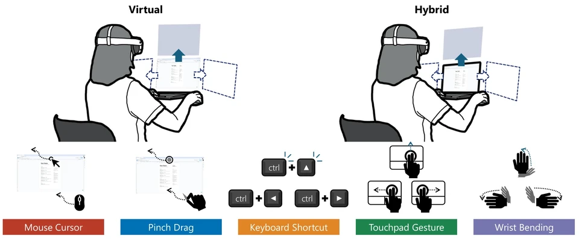

About
FITFuture Interaction Technology
AWEArts, Work, Entertainment
FIT-AWE Lab aims to give people the freedom to act in digital worlds as naturally as they do in the physical world. Through human-computer interaction, extended reality, and games, we explore how gaze, movement, and shared space can open new ways to create, work, and play.
Paper Awards
All awardsInvestigating How Physical Surfaces Can Serve as Common-Region Cues for Perceptual Grouping of Virtual Elements in Augmented Reality
DodgeUI: An Adaptive Interface for Mitigating Attentional Conflict via Implicit Motion Cues in Mobile AR
Tunnels vs. Wires: A Comparative Analysis of Two 3D Steering Tasks in Virtual Environments